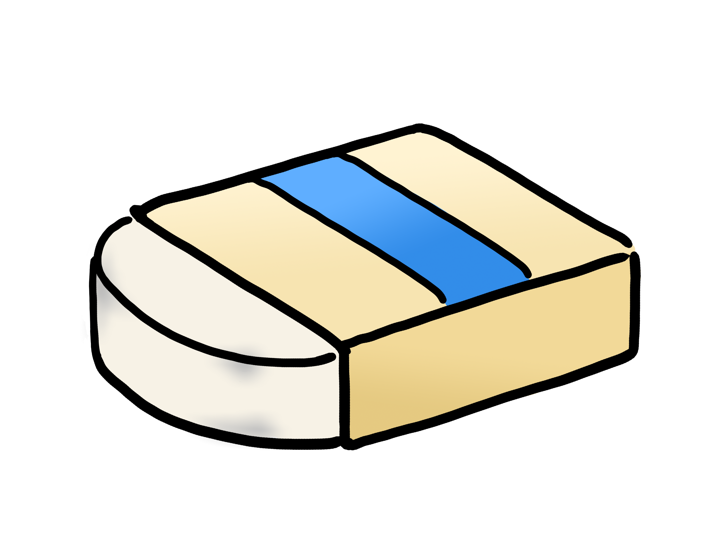
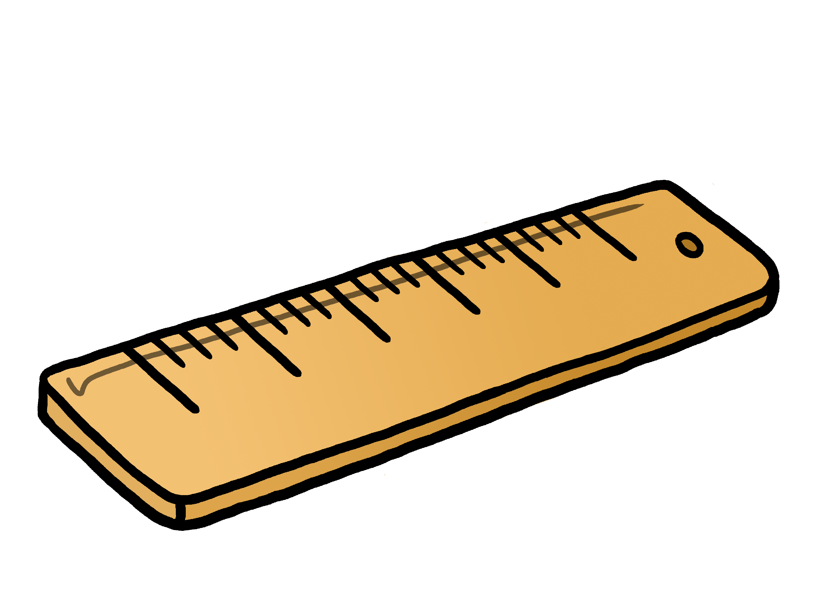
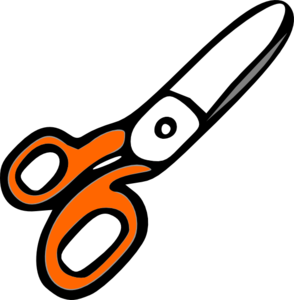
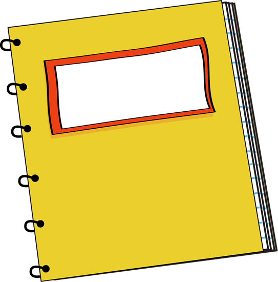

A product used for writing or drawing. Consist a think stick of graphite substance enclosed in a long thin piece of wood. Useful for elementary students in schools.
Yellow
Pink eraser in the end
18 cm long
10 baht
2. Erasers

A product made up of soft rubber and plastic. Used to rub out something written by pencil. Recommanded to buy with pencils.
White
Made out of soft rubber and plastic
Soft, easy to erase with
5 baht
3. Rulers

Straight strip of plastic, wood, or metal. Maked at regular intervals and is used to draw straight lines or measure distances. Often used in math or science classes.
Yellow
Made out of plastic
20 cm long
10 baht
4. Scissors

A product used cutting other materials. Consist two blades, each with a ring-shaped handle, that are pivoted together so taht their sharp edges work one against the other. Often used in art classes during elementary school.
Orange
Made out of plastic and metal
Size small; recommended for kids
50 baht
5. Notebooks

A book or binder of black, often ruled, pages for writing, recording notes, or drawing. Used by students in every grade and classes.